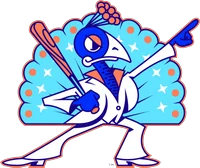
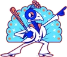

FBL · RF
Ken Griffey Jr.
CompareMilestone watch: 200 stolen bases
- Team

Carolina Disco Turkeys- Position
- RF
- Bats/Throws
- L/L
- Height/Weight
- 6'3", 218 lb
- Born
- Nov 21, 1969 in Donora, PA
- Age
- 32
- Uniform
- #3
- Salary
- $8,000,000 (3-year deal)
2002 batting
| Team | Lg | G | PA | AB | R | H | 2B | 3B | HR | RBI | BB | K | SB | AVG | OBP | SLG | OPS |
|---|---|---|---|---|---|---|---|---|---|---|---|---|---|---|---|---|---|
| CDT | FBL | 38 | 156 | 138 | 27 | 40 | 7 | 1 | 11 | 40 | 16 | 31 | 1 | .290 | .365 | .594 | .960 |
2002 batting, advanced
| Team | Lg | PA | Pit/PA | SH | SF | HBP | IBB | GIDP | CS | OPS+ | ISO | BABIP | BB% | K% | WPA | UBR | WAR |
|---|---|---|---|---|---|---|---|---|---|---|---|---|---|---|---|---|---|
| CDT | FBL | 156 | 3.88 | 0 | 1 | 1 | 1 | 2 | 0 | 144 | .304 | .299 | 10.3% | 19.9% | 1.00 | -1.3 | 1.3 |
Streaks
Longest hitting streak: 5 games (Apr 13 to Apr 18); current: none
Longest on-base streak: 18 games (Apr 23 to May 13)
Batting splits
| Split | G | PA | AB | R | H | 2B | 3B | HR | RBI | BB | K | SB | AVG | OBP | SLG | OPS | ISO | BABIP | BB% | K% |
|---|---|---|---|---|---|---|---|---|---|---|---|---|---|---|---|---|---|---|---|---|
| vs LHP | 18 | 49 | 45 | 7 | 15 | 2 | 1 | 4 | 12 | 4 | 10 | - | .333 | .388 | .689 | 1.077 | .356 | .355 | 8.2% | 20.4% |
| vs RHP | 34 | 107 | 93 | 20 | 25 | 5 | 0 | 7 | 28 | 12 | 21 | - | .269 | .355 | .548 | .904 | .280 | .273 | 11.2% | 19.6% |
| Home | 22 | 85 | 75 | 19 | 25 | 6 | 0 | 9 | 26 | 9 | 13 | 0 | .333 | .400 | .773 | 1.173 | .440 | .296 | 10.6% | 15.3% |
| Road | 16 | 71 | 63 | 8 | 15 | 1 | 1 | 2 | 14 | 7 | 18 | 1 | .238 | .324 | .381 | .705 | .143 | .302 | 9.9% | 25.4% |
By month
| Month | G | PA | AB | R | H | 2B | 3B | HR | RBI | BB | K | SB | AVG | OBP | SLG | OPS | ISO | BABIP | BB% | K% |
|---|---|---|---|---|---|---|---|---|---|---|---|---|---|---|---|---|---|---|---|---|
| April | 26 | 104 | 92 | 17 | 22 | 5 | 0 | 7 | 29 | 11 | 22 | 0 | .239 | .327 | .522 | .849 | .283 | .238 | 10.6% | 21.2% |
| May | 11 | 51 | 45 | 10 | 18 | 2 | 1 | 4 | 11 | 5 | 9 | 1 | .400 | .451 | .756 | 1.207 | .356 | .424 | 9.8% | 17.6% |
| August | 1 | 1 | 1 | 0 | 0 | 0 | 0 | 0 | 0 | 0 | 0 | 0 | .000 | .000 | .000 | .000 | .000 | .000 | 0.0% | 0.0% |
Situational
| Situation | PA | AB | H | 2B | 3B | HR | RBI | BB | K | AVG | OBP | SLG | OPS |
|---|---|---|---|---|---|---|---|---|---|---|---|---|---|
| Bases empty | 73 | 67 | 15 | 3 | 0 | 5 | 5 | 5 | 18 | .224 | .288 | .493 | .780 |
| Runners on | 83 | 71 | 25 | 4 | 1 | 6 | 35 | 11 | 13 | .352 | .434 | .690 | 1.124 |
| Runners in scoring position | 47 | 41 | 14 | 3 | 0 | 2 | 25 | 5 | 6 | .341 | .404 | .561 | .965 |
| RISP, two outs | 25 | 21 | 5 | 2 | 0 | 0 | 8 | 4 | 4 | .238 | .360 | .333 | .693 |
| Innings 1-3 | 57 | 50 | 17 | 3 | 1 | 4 | 21 | 5 | 10 | .340 | .404 | .680 | 1.084 |
| Innings 4-6 | 53 | 47 | 15 | 3 | 0 | 5 | 13 | 6 | 12 | .319 | .396 | .702 | 1.098 |
| Innings 7-9 | 46 | 41 | 8 | 1 | 0 | 2 | 6 | 5 | 9 | .195 | .283 | .366 | .648 |
Situational splits are rebuilt from every plate appearance in the export (base/out state when the PA began). "RBI" counts runs batted in on that PA.
2002 batting game log
| Date | Opp | Score | Pos | Bat | PA | AB | R | H | 2B | 3B | HR | RBI | BB | K | SB | CS | HBP | GIDP | WPA |
|---|---|---|---|---|---|---|---|---|---|---|---|---|---|---|---|---|---|---|---|
| Aug 16 | vsMONT | Susp. 4-0 | RF | 4 | 1 | 1 | 0 | 0 | 0 | 0 | 0 | 0 | 0 | 0 | 0 | 0 | 0 | 0 | -0.018 |
| May 13 | vsHOBK | W 12-0 | RF | 4 | 5 | 5 | 4 | 4 | 0 | 0 | 2 | 4 | 0 | 1 | 0 | 0 | 0 | 0 | 0.186 |
| May 12 | vsHOBK | L 3-5 | RF | 4 | 4 | 4 | 1 | 2 | 0 | 0 | 0 | 0 | 0 | 0 | 0 | 0 | 0 | 0 | 0.051 |
| May 11 | vsHOBK | W 8-7 | RF | 4 | 5 | 4 | 0 | 2 | 1 | 0 | 0 | 2 | 0 | 1 | 0 | 0 | 0 | 0 | 0.012 |
| May 10 | @SACR | W 6-4 | RF | 3 | 5 | 4 | 0 | 0 | 0 | 0 | 0 | 0 | 1 | 0 | 0 | 0 | 0 | 0 | -0.147 |
| May 9 | @SACR | W 9-6 | RF | 4 | 5 | 5 | 2 | 2 | 0 | 0 | 0 | 2 | 0 | 3 | 0 | 0 | 0 | 0 | 0.055 |
| May 8 | @SACR | L 2-5 | RF | 4 | 5 | 3 | 0 | 0 | 0 | 0 | 0 | 0 | 2 | 0 | 0 | 0 | 0 | 0 | -0.131 |
| May 6 | vsALSK | W 5-3 | RF | 4 | 4 | 4 | 0 | 1 | 0 | 0 | 0 | 0 | 0 | 1 | 0 | 0 | 0 | 0 | -0.146 |
| May 5 | vsALSK | L 3-4 | RF | 4 | 4 | 3 | 2 | 2 | 1 | 0 | 1 | 1 | 1 | 0 | 0 | 0 | 0 | 0 | 0.194 |
| May 4 | vsALSK | L 3-5 | RF | 4 | 4 | 3 | 0 | 0 | 0 | 0 | 0 | 0 | 1 | 0 | 0 | 0 | 0 | 0 | 0.004 |
| May 2 | @SARe | W 7-2 | RF | 4 | 5 | 5 | 1 | 4 | 0 | 1 | 1 | 2 | 0 | 0 | 1 | 0 | 0 | 0 | 0.153 |
| May 1 | @SARe | L 6-7 | CF | 4 | 5 | 5 | 0 | 1 | 0 | 0 | 0 | 0 | 0 | 3 | 0 | 0 | 0 | 0 | -0.075 |
| Apr 30 | vsHYG | W 7-3 | RF | 3 | 5 | 5 | 1 | 2 | 0 | 0 | 0 | 1 | 0 | 1 | 0 | 0 | 0 | 0 | 0.076 |
| Apr 29 | vsHYG | L 5-9 | RF | 4 | 5 | 3 | 0 | 0 | 0 | 0 | 0 | 0 | 2 | 1 | 0 | 0 | 0 | 0 | -0.048 |
| Apr 28 | vsHYG | W 4-3 | RF | 4 | 4 | 4 | 1 | 2 | 1 | 0 | 1 | 4 | 0 | 1 | 0 | 0 | 0 | 0 | 0.284 |
| Apr 27 | @ORLJ | W 10-4 | RF | 4 | 5 | 4 | 1 | 1 | 0 | 0 | 0 | 2 | 1 | 0 | 0 | 0 | 0 | 1 | 0.053 |
| Apr 26 | @ORLJ | L 3-5 | RF | 4 | 4 | 3 | 1 | 0 | 0 | 0 | 0 | 0 | 0 | 1 | 0 | 0 | 1 | 1 | -0.090 |
| Apr 25 | @ORLJ | L 2-3 | RF | 4 | 4 | 4 | 1 | 3 | 0 | 0 | 1 | 2 | 0 | 0 | 0 | 0 | 0 | 0 | 0.192 |
| Apr 23 | vsRiFS | W 9-3 | RF | 3 | 5 | 5 | 2 | 2 | 0 | 0 | 2 | 5 | 0 | 1 | 0 | 0 | 0 | 0 | 0.195 |
| Apr 22 | vsRiFS | L 5-6 | PH | 9 | 1 | 1 | 0 | 0 | 0 | 0 | 0 | 0 | 0 | 1 | 0 | 0 | 0 | 0 | -0.034 |
| Apr 21 | vsRiFS | L 5-8 | RF | 8 | 3 | 3 | 1 | 0 | 0 | 0 | 0 | 0 | 0 | 2 | 0 | 0 | 0 | 0 | -0.048 |
| Apr 20 | @SaSa | L 7-12 | RF | 4 | 3 | 2 | 0 | 0 | 0 | 0 | 0 | 0 | 1 | 1 | 0 | 0 | 0 | 0 | 0.040 |
| Apr 19 | @SaSa | L 3-4 | RF | 3 | 4 | 4 | 0 | 0 | 0 | 0 | 0 | 0 | 0 | 3 | 0 | 0 | 0 | 0 | -0.119 |
| Apr 18 | @SaSa | L 6-7 | RF | 4 | 5 | 5 | 0 | 2 | 1 | 0 | 0 | 2 | 0 | 2 | 0 | 0 | 0 | 0 | 0.161 |
| Apr 17 | vsHONO | W 5-2 | RF | 4 | 4 | 3 | 1 | 1 | 1 | 0 | 0 | 0 | 1 | 0 | 0 | 0 | 0 | 0 | 0.009 |
| Apr 16 | vsHONO | L 4-6 | RF | 4 | 4 | 3 | 1 | 1 | 1 | 0 | 0 | 1 | 1 | 0 | 0 | 0 | 0 | 0 | 0.098 |
| Apr 15 | vsHONO | W 8-3 | RF | 4 | 4 | 4 | 2 | 2 | 1 | 0 | 1 | 2 | 0 | 0 | 0 | 0 | 0 | 0 | 0.079 |
| Apr 13 | vsMONT | W 5-2 | RF | 3 | 4 | 3 | 0 | 1 | 0 | 0 | 0 | 1 | 1 | 0 | 0 | 0 | 0 | 0 | 0.021 |
| Apr 13 | vsMONT | L 2-9 | RF | 4 | 3 | 2 | 0 | 0 | 0 | 0 | 0 | 0 | 1 | 1 | 0 | 0 | 0 | 0 | -0.056 |
| Apr 9 | @EUGL | W 5-0 | RF | 3 | 4 | 4 | 1 | 1 | 0 | 0 | 0 | 0 | 0 | 0 | 0 | 0 | 0 | 0 | 0.007 |
| Apr 8 | @EUGL | L 0-8 | RF | 4 | 4 | 4 | 0 | 0 | 0 | 0 | 0 | 0 | 0 | 2 | 0 | 0 | 0 | 0 | -0.038 |
| Apr 7 | vsALBQ | W 3-1 | RF | 4 | 4 | 4 | 0 | 0 | 0 | 0 | 0 | 0 | 0 | 1 | 0 | 0 | 0 | 0 | -0.079 |
| Apr 6 | vsALBQ | W 8-5 | RF | 4 | 4 | 4 | 2 | 2 | 0 | 0 | 1 | 1 | 0 | 0 | 0 | 0 | 0 | 0 | 0.012 |
| Apr 5 | @MePh | L 4-9 | RF | 4 | 5 | 5 | 1 | 1 | 0 | 0 | 0 | 1 | 0 | 2 | 0 | 0 | 0 | 0 | -0.057 |
| Apr 4 | @MePh | L 5-11 | RF | 4 | 5 | 4 | 0 | 0 | 0 | 0 | 0 | 2 | 1 | 0 | 0 | 0 | 0 | 0 | 0.030 |
| Apr 3 | @MePh | L 4-10 | RF | 4 | 3 | 2 | 0 | 0 | 0 | 0 | 0 | 1 | 1 | 1 | 0 | 0 | 0 | 0 | -0.013 |
| Apr 2 | vsLoBa | W 5-3 | RF | 4 | 4 | 4 | 0 | 0 | 0 | 0 | 0 | 0 | 0 | 0 | 0 | 0 | 0 | 0 | -0.092 |
| Apr 1 | vsLoBa | W 6-5 | RF | 4 | 4 | 3 | 1 | 1 | 0 | 0 | 1 | 4 | 1 | 1 | 0 | 0 | 0 | 0 | 0.282 |
2002 fielding by position
| Team | Lg | Pos | G | GS | Inn | TC | PO | A | E | DP | FPct | ZR | Arm | Framing | SB | CS | CS% | PB |
|---|---|---|---|---|---|---|---|---|---|---|---|---|---|---|---|---|---|---|
| CDT | FBL | RF | 36 | 35 | 304.0 | 76 | 70 | 3 | 3 | 0 | .961 | 2.2 | 0.9 | - | - | - | - | - |
| CDT | FBL | CF | 1 | 1 | 8.0 | 1 | 1 | 0 | 0 | 0 | 1.000 | 0.1 | 0.0 | - | - | - | - | - |
ZR (zone rating), Arm and Framing are OOTP's runs-above-average figures. SB/CS/CS% are base stealers against him as a catcher.
Career batting
| Year | Team | Lvl | G | PA | AB | R | H | 2B | 3B | HR | RBI | BB | K | SB | AVG | OBP | SLG | OPS | WAR |
|---|---|---|---|---|---|---|---|---|---|---|---|---|---|---|---|---|---|---|---|
| 1987 | - | Short-A | 54 | 228 | 182 | 43 | 57 | 9 | 1 | 14 | 40 | 44 | 42 | 13 | .313 | .445 | .604 | 1.049 | 3.5 |
| 1988 | - | AA | 17 | 68 | 61 | 10 | 17 | 5 | 1 | 2 | 10 | 5 | 12 | 4 | .279 | .353 | .492 | .845 | 0.3 |
| 1988 | - | A | 58 | 256 | 219 | 50 | 74 | 13 | 3 | 11 | 42 | 34 | 39 | 32 | .338 | .431 | .575 | 1.007 | 3.3 |
| 1989 | SEA | Majors | 127 | 506 | 455 | 61 | 120 | 23 | 0 | 16 | 61 | 44 | 83 | 16 | .264 | .329 | .420 | .748 | 2.2 |
| 1990 | SEA | Majors | 155 | 666 | 597 | 91 | 179 | 28 | 7 | 22 | 80 | 63 | 81 | 16 | .300 | .366 | .481 | .847 | 4.7 |
| 1991 | SEA | Majors | 154 | 633 | 548 | 76 | 179 | 42 | 1 | 22 | 100 | 71 | 82 | 18 | .327 | .399 | .527 | .926 | 5.5 |
| 1992 | SEA | Majors | 142 | 617 | 565 | 83 | 174 | 39 | 4 | 27 | 103 | 44 | 67 | 10 | .308 | .361 | .535 | .896 | 5.3 |
| 1993 | SEA | Majors | 156 | 691 | 582 | 113 | 180 | 38 | 3 | 45 | 109 | 96 | 91 | 17 | .309 | .408 | .617 | 1.025 | 6.9 |
| 1994 | SEA | Majors | 111 | 493 | 433 | 94 | 140 | 24 | 4 | 40 | 90 | 56 | 73 | 11 | .323 | .402 | .674 | 1.076 | 4.9 |
| 1995 | SEA | Majors | 72 | 314 | 260 | 52 | 67 | 7 | 0 | 17 | 42 | 52 | 53 | 4 | .258 | .379 | .481 | .860 | 1.7 |
| 1995 | T | AAA | 1 | 3 | 3 | 0 | 0 | 0 | 0 | 0 | 0 | 0 | 1 | 0 | .000 | .000 | .000 | .000 | -0.1 |
| 1996 | SEA | Majors | 140 | 638 | 545 | 125 | 165 | 26 | 2 | 49 | 140 | 78 | 104 | 16 | .303 | .392 | .628 | 1.020 | 5.8 |
| 1997 | SEA | Majors | 157 | 704 | 608 | 125 | 185 | 34 | 3 | 56 | 147 | 76 | 121 | 15 | .304 | .382 | .646 | 1.028 | 6.6 |
| 1998 | SEA | Majors | 161 | 720 | 633 | 120 | 180 | 33 | 3 | 56 | 146 | 76 | 121 | 20 | .284 | .365 | .611 | .977 | 6.4 |
| 1999 | SEA | Majors | 160 | 706 | 606 | 123 | 173 | 26 | 3 | 48 | 134 | 91 | 108 | 24 | .285 | .384 | .576 | .960 | 5.2 |
| 2000 | CIN | Majors | 145 | 631 | 520 | 100 | 141 | 22 | 3 | 40 | 118 | 94 | 117 | 6 | .271 | .387 | .556 | .942 | 4.2 |
| 2001 | CIN | Majors | 111 | 417 | 364 | 57 | 104 | 20 | 2 | 22 | 65 | 44 | 72 | 2 | .286 | .365 | .533 | .898 | 3.0 |
| 2002 | CDT | FBL | 38 | 156 | 138 | 27 | 40 | 7 | 1 | 11 | 40 | 16 | 31 | 1 | .290 | .365 | .594 | .960 | 1.3 |
| Top level | 1829 | 7892 | 6854 | 1247 | 2027 | 369 | 36 | 471 | 1375 | 901 | 1204 | 176 | .296 | .379 | .566 | .945 | 63.6 |
Seasons before 2002 are the player's real-life record, listed under the franchise that holds that history in this universe. "Top level" totals count major-league-level seasons only.
Service time & contract status
- Service time
- 12.130 (2,194 days; 43 this season)
- Status
- FA-eligible
- Arbitration
- Past arbitration (6+ years)
- Free agency
- Eligible (6+ years): can test the market when his current deal ends
- Options
- 1 used, 2 remaining (of 3)
Service time is Y.DDD: major-league service years plus days toward the next year (172 days = 1 year, from the league rules). Status follows the league rules: under 3 years Pre-Arb, 3 to 5 years Arb 1/2/3, 6+ years FA-eligible. The export's arbitration_offering is 0 and no player has gone through arbitration yet (has_received_arbitration is 0 for everyone), so these statuses come from the rules, not from hearings. Projected years assume a full major-league season of service every year from 2002 on.
Contract
| Year | Salary |
|---|---|
| 2002 | $8,000,000 |
| 2003 | $8,000,000 |
| 2004 | $8,000,000 |
3-year contract with Carolina Disco Turkeys; vesting option on the final year.
Most frequent matchups pitchers he has faced
| Pitcher | AB | H | HR | AVG |
|---|---|---|---|---|
| Chuck Finley | 4 | 2 | 1 | .500 |
| Rolando Arrojo | 4 | 0 | 0 | .000 |
| Mark Hendrickson | 3 | 3 | 1 | 1.000 |
| Al Leiter | 3 | 2 | 1 | .667 |
| Joe Mays | 3 | 2 | 0 | .667 |
| Mark Buehrle | 3 | 2 | 0 | .667 |
| Jeff Suppan | 3 | 2 | 1 | .667 |
| Claudio Vargas | 3 | 2 | 0 | .667 |
| Roger Clemens | 3 | 1 | 1 | .333 |
| Everett Stull | 3 | 1 | 0 | .333 |
| Chris Capuano | 3 | 1 | 0 | .333 |
| Eric Knott | 3 | 1 | 0 | .333 |
| Hideo Nomo | 3 | 1 | 0 | .333 |
| Brian Lawrence | 3 | 1 | 0 | .333 |
| Rigo Beltran | 3 | 1 | 0 | .333 |
In our stories 5
- All One Month In: The Six Clubs to Follow, and Whose Odds Moved Most Site Staff
- All tiers April 14-21: Who Is Trending Up, Who Is Fraying Alex Miller
- Roundups Roundup, April 6: Monterrey 10, Sacramento 9 Alex Miller
- Roundups Roundup, April 1: Cherry Blossoms 5, Marlins 0 Alex Miller
- Preview Teams to Watch: Six 2002 Season Previews Alex Miller